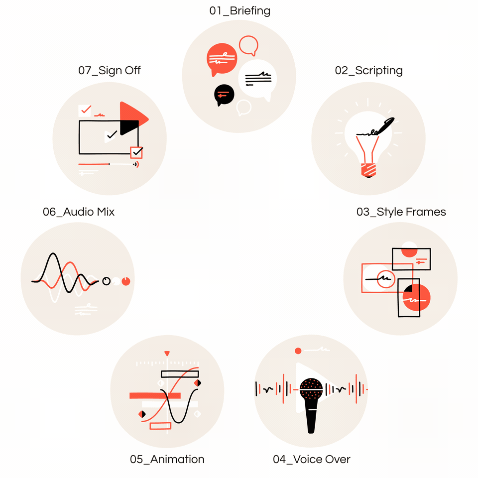

The animation process is vital because it helps you to express concepts in a clear and concise manner. A cost-effective communication method is to plan your procedure in a studio. Remember that animation is a complicated medium. You risk major difficulties throughout production if you don't create a suitable animation strategy from the start. Not to mention a less-than-stellar outcome. Yet there's no instruction manual on how to produce a successful animation for your brand.
1. Storyboard
- A storyboard is a collection of hand drawings displayed in sequence for the purpose of
pre-visualizing an animation sequence. The images allow the animation team to plan the
flow of the plot and the composition of the imagery.
2. Design
- This is the phase where character designers prepare model sheets for all important
characters and props in the film.
3. Layout
- Layout begins after the designs are completed and approved by the director. The layout
process is the same as the blocking out of shots by a cinematographer on live-action film.
It is here that the background layout artists determine the camera angles, camera paths,
lighting, and shading of the scene.
4. Animation
- This is the phase where animators will begin by drawing sequences of animation on
sheets of transparent paper perforated to fit the peg bars in their desks, often using
colored pencils, one picture or “frame” at a time.
5. Pencil test
- After all the drawings are cleaned up, they are then photographed on an animation
camera; usually on black and white stock. Nowadays, pencil tests can be made using a
video camera and computer software.
6. Backgrounds
- This is the process of creating a set design that will be used for a specific scene in the
animated film. The designers create an environment where the characters and other
objects can move.
7. Filming
- The images created in animation and backgrounds are traditionally painted on clear thin
plastic sheets made of acetate. The layers of cels with the image inked and painted on
them are arranged under a camera and are photographed using a rostrum camera to create
a composite image.
8. Voice Recording
- Before true animation begins, the sounds and speech are recorded for use in the animated
film. This step is sometimes done after animation with the voice actors as a guide to
synchronize speech with the animation.
9. Animatic
- Often, an animatic or story reel is made after the soundtrack is created, but before full
animation begins. An animatic is a videotaped version of the storyboard. When the initial
voice record is done, the storyboard is matched with the recorded voices.
10. Post-Production
- This is the phase where polishing takes place. Depending on the method of distribution
the audio or voice recordings could be mastered or engineered with the film to create the
full animated film.
There are 8 key stages of the animation process that you need to pay attention to, as well as questions you must ask yourself:
1. Researching - You must learn and fully understand some critical information about the project you are working on: What is the objective of the animation? Who is the intended audience? Are there any particular requirements?
2. Defining the scope of the animation - What is the main goal of your project? What do you hope the animation will convey? What are the deadlines and timetables? How much money are you prepared to spend? How do ROI prospects appear?
3. Brainstorming and script writing – After you've completed the research step and defined the project's scope, your attention should be on determining your piece's primary subject and developing a captivating script around it.
4. Voiceover recording - Most animated films include voiceover, whether in the form of dialogue between characters or narration. Voiceover is an important part of communicating your message through animated works.
5. Storyboarding – It is the most effective approach to depict an animation project: animations frequently involve many scenes with varying actors, viewpoints, and messages. The key to creating a great animated video is how you combine all of these aspects. A storyboard can assist you get a high-level overview of the project.
6. Animating - It's now time to bring your idea to life by animating it. The animation process is very technical and is heavily reliant on the tools, applications, and techniques you employ.
The special terms you need to remember are:
1. ANIMATION PROCESS
- helps you plan your procedure in an animation studio.
2. STORYBOARD
- is the 1st process, allows the animation team to plan the
flow of the plot and the composition of the imagery.
3. POST-PRODUCTION
- is the last in the process, phase where polishing takes place.
Look at the process.
